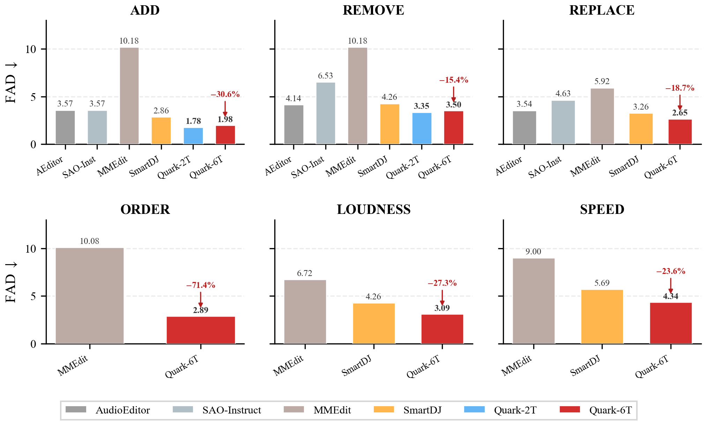

Experimental Results
QuarkAudio-Edit is evaluated on 3,000 single-step editing triplets from a held-out AudioCaps test split and 500 declarative complex instructions, consistently outperforming strong baselines across all metrics. All experiments employ 10 s test samples on a single A100 GPU.
Text-to-Audio Generation (AudioCaps Test Set)
Pure text-to-audio synthesis on AudioCaps (881 clips) without source conditioning. GT reference: CLAP = 0.526, IS = 11.25. Avg. Rank averages the per-metric ranks. Our editor attains the second-best average rank (2.8) among nine systems, matching UNISON on distributional fidelity while using 5× fewer sampling steps (20 vs. 100) and surpassing it in text–audio alignment (CLAP 0.488 vs. 0.467).
| Method | FAD ↓ | FD ↓ | KL ↓ | IS ↑ | CLAP ↑ | Avg. Rank ↓ |
|---|---|---|---|---|---|---|
| AudioLDM 2-Large | 3.097 | 29.68 | 1.490 | 7.98 | 0.452 | 6.0 |
| Tango | 1.846 | 24.52 | 1.305 | 7.45 | 0.498 | 3.6 |
| Stable Audio Open | 10.83 | 52.03 | 3.049 | 6.13 | 0.203 | 8.8 |
| Make-An-Audio | 2.142 | 20.14 | 1.597 | 10.02 | 0.441 | 5.1 |
| Audio-Omni | 2.535 | 31.42 | 1.337 | 9.55 | 0.486 | 4.6 |
| MMAudio-L | 5.893 | 16.53 | 1.421 | 11.98 | 0.441 | 4.5 |
| UniSonate | 4.210 | 30.21 | 2.440 | 8.22 | — | 7.0 |
| UNISON | 1.756 | 15.82 | 1.455 | 12.04 | 0.467 | 2.2 |
| QuarkAudio-Edit | 1.822 | 16.45 | 1.472 | 10.58 | 0.488 | 2.8 |
Overall Comparison on Declarative Complex Instructions
500 declarative complex instructions. “w/o ALM” denotes systems without an audio language model for decomposition. Inference time is per 10 s sample on a single A100 GPU. Steps: denoising steps (NFE for diffusion models).
| Framework | Model | Inf. (s) ↓ | Steps ↓ | LSD ↓ | FAD ↓ | FD ↓ | KL ↓ | IS ↑ | CLAP ↑ | R-MOS ↑ | F-MOS ↑ |
|---|---|---|---|---|---|---|---|---|---|---|---|
| w/o ALM | AudioEditor | 42.51 | 200 | 2.14 | 5.26 | 62.38 | 3.41 | 3.08 | 0.112 | 2.71±0.89 | 2.85±0.94 |
| w/ ALM | MMEdit | 19.28 | 100 | 2.23 | 5.58 | 58.92 | 3.52 | 2.96 | 0.105 | 2.95±0.85 | 3.32±0.82 |
| SAO-Instruct | 18.58 | 50 | 1.89 | 4.73 | 55.14 | 3.18 | 3.45 | 0.148 | 3.11±0.79 | 3.58±0.76 | |
| SmartDJ | 8.62 | 50 | 1.72 | 4.15 | 48.36 | 2.87 | 3.82 | 0.175 | 3.23±0.74 | 3.75±0.71 | |
| QuarkAudio-Edit | 9.85 | 20 | 1.38 | 3.27 | 35.41 | 2.18 | 4.32 | 0.241 | 3.53±0.65 | 3.98±0.58 | |
| w/o RAG | 9.72 | 20 | 1.51 | 3.59 | 38.28 | 2.42 | 4.16 | 0.225 | 3.42±0.68 | 3.86±0.62 | |
| w/o CoT | 8.25 | 20 | 1.62 | 3.89 | 41.28 | 2.61 | 4.05 | 0.212 | 3.24±0.76 | 3.61±0.74 | |
| w/o PRL | 8.25 | 20 | 1.79 | 4.48 | 46.73 | 2.85 | 3.89 | 0.186 | 3.12±0.81 | 3.42±0.79 |
Compared to SmartDJ, QuarkAudio-Edit reduces FAD by 21.2% (3.27 vs. 4.15) and FD by 26.8% (35.41 vs. 48.36), while improving CLAP by 37.7% (0.241 vs. 0.175) and running 1.9× faster than SAO-Instruct in only 20 steps.
Per-Operation Comparison (FAD ↓)
Per-operation FAD across the six atomic editing operations on 3,000 single-step samples. Lower is better. QuarkAudio-Edit outperforms all baselines across all operations, with large gains on Order (FAD 2.886 vs. MMEdit 10.08, −71.4%) and Loudness (3.094 vs. SmartDJ 4.256, −27.3%). The 6-task model maintains comparable performance (<2% degradation) with the 2-task variant, confirming that the six atomic categories compose without mutual interference.

Figure 5. Per-operation FAD comparison across six atomic editing operations. Lower is better.
Ablation on the Progressive RL Schedule
Ablation on the Progressive RL schedule (500 complex instructions). S1 optimizes CoT reasoning; S2 optimizes audio fidelity. The progressive schedule (FAD 3.27) clearly outperforms simultaneous joint training (FAD 4.02), confirming that stabilizing CoT reasoning before fidelity optimization prevents gradient conflict.
| Schedule | LSD ↓ | FAD ↓ | FD ↓ | KL ↓ | IS ↑ | CLAP ↑ |
|---|---|---|---|---|---|---|
| S1 only | 1.74 | 4.25 | 44.26 | 2.78 | 3.96 | 0.192 |
| S2 only | 1.76 | 4.12 | 43.25 | 2.82 | 3.85 | 0.198 |
| Joint (simultaneous) | 1.65 | 4.02 | 42.56 | 2.71 | 3.52 | 0.215 |
| Progressive (Ours) | 1.38 | 3.27 | 35.41 | 2.18 | 4.32 | 0.241 |
Editor Generalization: Speech Editing (RealEdit Benchmark)
Cross-domain generalization on the RealEdit benchmark. Using transcript conditioning alone and without any architecture changes, the MMDiT editor handles word-level insertion, deletion, and substitution. QuarkAudio-Edit attains the highest speaker similarity (SpkSIM 0.9752) and the lowest WER among all generative editors except CosyEdit (4.95% vs. 4.50%), while its UTMOS (3.46) surpasses the ground truth (3.38).
| Method | WER (%) ↓ | SpkSIM ↑ | MOSNet ↑ | UTMOS ↑ |
|---|---|---|---|---|
| GroundTruth | 6.06 | — | 3.34 | 3.38 |
| VoiceCraft | 6.55 | 0.9712 | 3.18 | 3.31 |
| Step-Audio-EditX | 10.76 | 0.9588 | 3.94 | 3.89 |
| MiMo-Audio | 16.86 | 0.9371 | 3.48 | 3.38 |
| Ming-UniAudio | 9.98 | 0.9670 | 3.13 | 3.18 |
| CosyEdit | 4.50 | 0.9734 | 3.19 | 3.30 |
| QuarkAudio-Edit (ours) | 4.95 | 0.9752 | 3.32 | 3.46 |
External Benchmark Generalization (MMAE, Overall)
Evaluation on the MMAE benchmark. IFR: instruction following rate; CR: content retention; EMR: exact match rate. QuarkAudio-Edit achieves the highest instruction following rate (IFR 51.85%), surpassing Audio-Omni (50.73%) and UNISON (44.89%). Content retention (CR 59.45%) remains competitive: the gap to UNISON (66.43%) reflects more aggressive instruction compliance, as confirmed by the anti-correlated Identity baseline (CR 94.13%, IFR 27.37%).
| Model | IFR ↑ | CR ↑ | EMR ↑ |
|---|---|---|---|
| Identity | 27.37 | 94.13 | — |
| Noise | 32.08 | 15.68 | — |
| Ming-UniAudio | 29.82 | 52.71 | 3.20 |
| SmartDJ w/o planner | 38.20 | 55.41 | 4.62 |
| SmartDJ w/ planner | 42.26 | 48.33 | 3.12 |
| UNISON | 44.89 | 66.43 | 4.60 |
| Audio-Omni | 50.73 | 56.93 | 4.99 |
| QuarkAudio-Edit (ours) | 51.85 | 59.45 | 4.73 |
Key Ablation Findings
From the component and schedule ablations, four findings emerge:
Inference Efficiency Analysis
The full pipeline requires 9.85 s per 10 s sample on a single A100: ALM planning ~2.1 s (21.3%), RAG retrieval 0.3 s (3.0%), MMDiT generation (20 NFE) 7.1 s (72.1%), and encoding/post-processing 0.35 s (3.6%). Compared with AudioEditor (42.51 s) and MMEdit (19.28 s), the single-pass design achieves 4.3× and 2.0× speedups; consistency distillation can further reduce NFE to 4–6 steps. This latency suits offline creative workflows such as podcast post-processing.
RAG Retrieval Robustness
The planner incorporates graceful degradation: when maximum cosine similarity falls below τ = 0.6, the system reverts to zero-shot planning. Without RAG the model achieves FAD 3.59 (9.8% relative increase over 3.27). The 550K+ index spans six atomic operation types, providing sufficient coverage for common patterns; for rare long-tail compositions, performance degrades gracefully since the ALM retains decomposition capability independent of retrieval quality.
Spectrogram Comparison: Non-Edited Region Preservation
Log-magnitude spectrograms (44.1 kHz, mono) comparing QuarkAudio-Edit against baselines across all six atomic operations. Two consistent observations: (1) QuarkAudio-Edit maintains spectral structure of non-target regions with high fidelity—background textures, harmonic patterns, and energy distributions remain intact. Baselines introduce visible global distortion or spectral smearing. (2) Edited regions closely match ground truth in both spectral shape and temporal alignment.

Figure 9. Content-level operations. Row 1 (Add): “Add the sound of Heartbeat singing”—QuarkAudio-Edit inserts the target event while preserving the original background. Row 2 (Remove): “Remove the sound of Harmonica and singing”—clean suppression without spectral holes. Row 3 (Replace): “Replace Whistle blowing with Baby crying”—substitution while maintaining non-target content.

Figure 10. Signal-level operations. Row 1 (Speed): “Slow down the sound of Coin dropping, Rustling”—correct time-stretching while preserving spectral characteristics. Row 2 (Loudness): “Turn up the volume of Livestock vocalizing”—amplification without clipping or artifacts. Row 3 (Order): “Swap the order of two audio segments”—temporal reordering with segment integrity preserved.